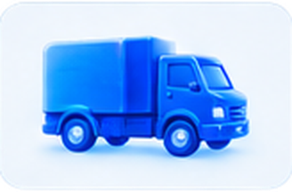
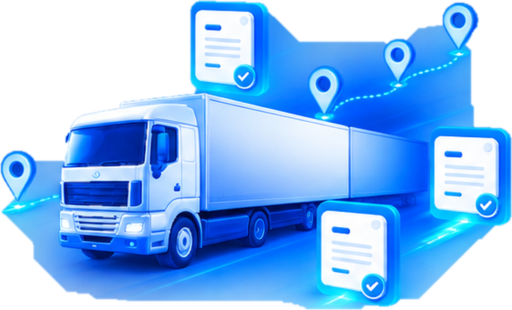
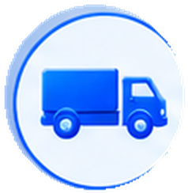
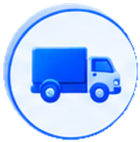

Грузоотправителю
Оформляет и подписывает свою часть перевозочных документов.
Обязательный переход с 1 сентября 2026
Электронные перевозочные документы прямо в вашей программе 1С
Подготовьте работу с транспортными и перевозочными документами к новым требованиям и обменивайтесь ими с участниками перевозки в электронном виде.
ВИТ поможет проверить вашу 1С, подключить 1С-ЭПД, настроить электронные подписи и протестировать обмен до начала обязательного применения.

С 1 сентября 2026 года участники соответствующих грузоперевозок должны оформлять ряд перевозочных документов в электронном виде по форматам, утверждённым ФНС России. Изменения введены Федеральным законом от 07.06.2025 № 140-ФЗ.
ЭПД затрагивает организации, которые участвуют в соответствующих грузоперевозках — независимо от того, кто инициирует перевозку.

Оформляет и подписывает свою часть перевозочных документов.
Работает с документом в ходе перевозки и передаёт необходимые сведения.
Подписывает часть документа при получении груза — даже если компания не инициирует перевозку.
Работает с перевозочными и экспедиторскими электронными документами.
Даже если компания не инициирует перевозку, при участии в соответствующей перевозке ей может потребоваться работа с электронной транспортной накладной.
Для работы с 1С-ЭПД организация подключается к электронному обмену в программе через 1С-ЭДО и использует поддерживаемого оператора ИС ЭПД. Это разные сервисы, которые дополняют друг друга.
В программах 1С сервис 1С-ЭПД поддерживает утверждённые форматы электронных перевозочных документов для автотранспорта. Список актуален на официальном портале 1С.
Электронная транспортная накладная и электронный заказ (заявка) станут обязательными с 01.09.2026. Поддержка других обязательных форматов зависит от конфигурации и релиза программы 1С.


Документ формируется и подписывается участниками перевозки, а оператор ИС ЭПД передаёт необходимые сведения в ГИС ЭПД.
Экспедитор участвует в отдельных сценариях — с экспедиторскими и складскими электронными документами.
Создание, подписание, обмен, корректировки и дополнительная информация в поддерживаемых программах 1С обрабатываются без переключения в отдельную систему.
Проверим вашу 1С и текущий документооборот, настроим подключение и проведём тестовый обмен, чтобы сотрудники были готовы работать по новым правилам.
Конфигурацию и версию 1С, подключение к ЭДО и текущие процессы.
Подключение, оператора, роли, подписи и необходимые параметры.
Проведём тестовый сценарий с участниками перевозки.
Объясним новый порядок работы и основные действия в 1С.
ЭПД — многосторонний процесс: для тестирования нужны не только настройки вашей 1С, но и готовность других участников перевозки. Проверка заранее помогает выявить ошибки в ролях, подписях и сценариях обмена.
Подберём вариант с учётом объёма перевозочных документов. Актуальные тарифы — на официальной странице 1С-ЭПД.
Проверим вашу 1С, настроим 1С-ЭПД и проведём тестовый обмен до начала обязательного применения.
Переход касается участников соответствующих грузоперевозок: грузоотправителей, перевозчиков, грузополучателей и экспедиторов — в зависимости от роли в конкретной перевозке.
Да, если организация является участником соответствующей перевозки, она должна работать со своей частью электронного документа — в том числе при получении груза.
1С-ЭДО — общий юридически значимый обмен документами с контрагентами. 1С-ЭПД — специализированная работа с перевозочными документами для участников грузоперевозок.
Нет. Обмен осуществляется через аккредитованного оператора ИС ЭПД, который передаёт сведения в ГИС ЭПД.
Да. Тип подписи и необходимость МЧД зависят от роли подписанта и сценария перевозки.
ВИТ сначала проверит конфигурацию, версию и доработки. При нестандартной системе может потребоваться дополнительная настройка.
Да. ЭПД — многосторонний документооборот, поэтому тестирование лучше проводить с реальным участником перевозки.
Да: проверка, подключение, настройка, тестовый обмен и помощь сотрудникам.